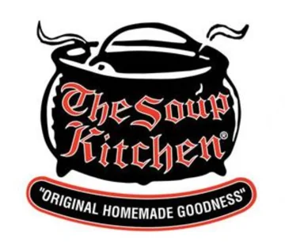
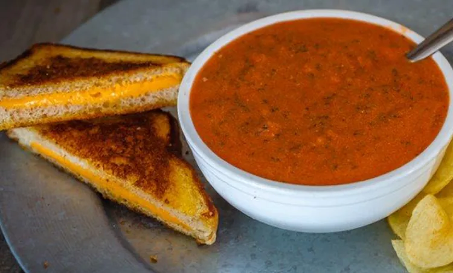
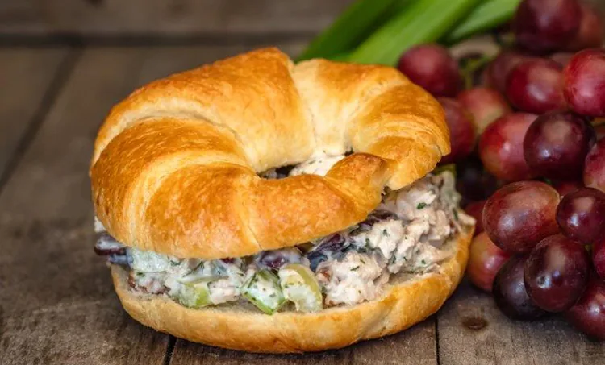

About us
Original Homemade Goodness
We take great pride in our recipes, the way our food is prepared and the ingredients we use. Our soups, breads, deli sandwiches, salads and desserts are made in-house from scratch daily by our dedicated team. Freshness is a key ingredient to Original Homemade Goodness!
What that looks like every day
- 8 soupsEach day the kitchen serves 8 styles of soup.
- 4 to 6 breadsHomemade, baked fresh, from cheese bread to Mexican cornbread.
- Over 40 yearsOf perfecting recipes and serving folks in Tennessee, in their words.
- 4 kitchensOak Ridge, Knoxville, Alcoa and Madisonville.

From the kitchen


More from the regulars
“Quaint place to eat. Food was fresh and yummy, especially the mini loafs of bread!!! … The atmosphere was perfect with the black and white checkered tablecloths.”
Bobbi Fleming · Google review, Madisonville, 4 months ago
“Amazing. After 8 years of working in Oak Ridge I finally decided to try The Soup Kitchen and all I can say is wow. … I will certainly not wait 8 years to return.”
William Robins · Google review, Oak Ridge, 4 years ago
“Great soups! They even have a couple gluten free options! Very casual atmosphere, love it!”
Kerry Harvey · Google review, Alcoa, 8 months ago
“The rotating list of soups always includes at least one vegetarian and gluten free soup, and they are all delicious.”
Eleanor Tyner · Google review, Oak Ridge, 3 years ago
Want to work in a scratch kitchen?
The Soup Kitchen's job application is a printable PDF. Job application (PDF)